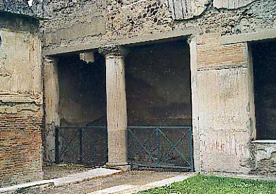
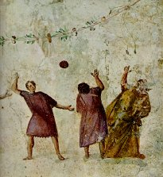

|
Lexique épigraphique |
| |
|
| SPHAERISTERIUM |
||
|
Sphaeristerium des thermes de Stabies à Pompei. 
|
La vogue du jeu
de paume était grande dans les bains publics comme dans les bains
privés.  (détail d'une fresque du Ier siècle, musée des Thermes, Rome)
|